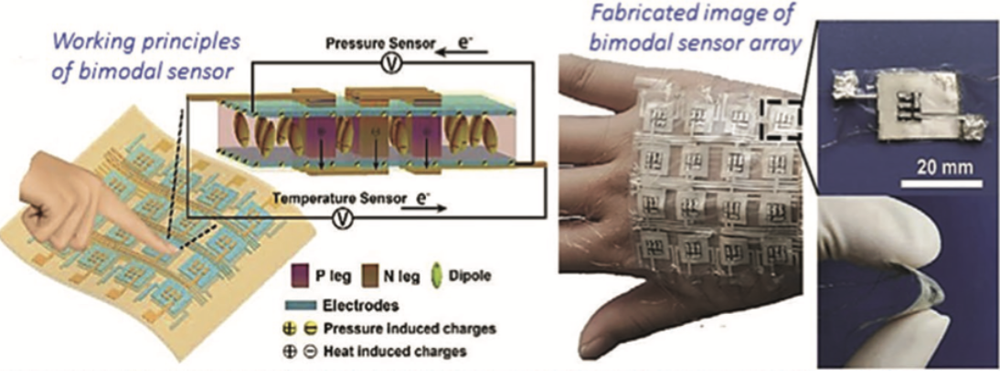

Built an ESP32-based control system integrating sensors with MOSFET drivers for real-time temperature, humidity, and CO₂ regulation. Designed specifically for Lion's Mane and King Oyster mushrooms, it dynamically controls airflow based on real-time sensor data.
Key Features
ESP32 Microcontroller — Low-power Wi-Fi and Bluetooth-enabled chip for wireless telemetry and real-time control.
C/C++ Firmware Development — Programmed real-time sensor polling, PID humidity loops, and OLED status display.
MOSFET Driver Integration — Integrated sensors with MOSFET drivers for precise environmental control.
OLED Display Output — Real-time feedback provided via a 0.96" I²C OLED screen.
Relay-Controlled Exhaust Fan — Automated fan logic based on CO₂ levels (configurable thresholds for different mushroom species).
ThingSpeak Telemetry — Implemented telemetry and GitHub Pages dashboard for remote sensor monitoring and visualization.
Web Dashboard with GitHub Pages — Live-updating web interface hosting data visualizations, branding, and project visuals.
Technical Highlights
Embedded Systems Programming (C++ / Arduino)
Internet of Things (IoT) architecture
Real-time sensor communication via I²C and UART
Cloud API integration (ThingSpeak)
GitHub Pages static site deployment
Breadboard prototyping + serial debugging
Power management between 3.3V and 5V rails
CO₂ Thresholds
Lion's Mane: 800–1500 PPM
King Oyster: 600–800 PPM
Fan logic was tuned to maintain these ranges by activating airflow as needed.
ZT Group Research - Thermoelectric Generator Development
Undergraduate research project focused on developing thermoelectric generator (TEG) circuits that harvest body heat to power wearable medical devices. Working with organic thermoelectric device prototypes to characterize power output across variable thermal gradients.

Research Components
PCB Design in Altium — Created PCB layouts for TEG measurement and data logging, enabling validation of efficiency and stability under load
Thermoelectric Characterization — Characterized organic thermoelectric device prototypes, measuring power output across variable thermal gradients
TEG Circuit Development — Developed thermoelectric generator circuits harvesting body heat to power wearable medical devices
Data Logging Systems — Implemented comprehensive data logging for efficiency and stability validation
Leading embedded system development for autonomous sailboat navigation, integrating GPS, IMU, anemometer, and sail/rudder servos into the compute stack. Designed and programmed a custom PCB in KiCAD consolidating buck converters, Teensy microcontroller, and servo routing.
Technical Leadership
Custom PCB Design — Designed and programmed a custom PCB in KiCAD consolidating buck converters, Teensy microcontroller, and servo routing, significantly improving reliability and simplifying debugging
Embedded System Integration — Led embedded system development for autonomous sailboat navigation, integrating GPS, IMU, anemometer, and sail/rudder servos into the compute stack
System Reliability — Significantly improved system reliability and simplified debugging through custom PCB design
Worked with Ghost Social, a startup that creates genuine human connections through AI-powered event matchmaking. The platform uses conversational voice intake and advanced matching algorithms to curate meaningful connections at events and gatherings.
Technical Contributions
Automated WhatsApp AI Agent — Designed and deployed an automated match-delivery WhatsApp AI agent using AWS Bedrock + Twilio, increasing delivery reliability and engagement
GraphRAG Backend Architecture — Implemented GraphRAG backend architecture integrating Pinecone + Neo4j to improve match accuracy and relationship reasoning across profiles
AI System Enhancement — Worked with cutting-edge matching engine technology to improve compatibility predictions
Business Development & Marketing
Strategic Partnerships — Forged partnerships with local startups and community organizations
Sponsorship Acquisition — Secured sponsorships and comarketing agreements
Brand Visibility — Boosted brand visibility through strategic collaborations
Digital Marketing — Implemented data-driven marketing strategies and analytics
Platform Features
7-minute conversational voice intake for rich user profiling
AI-powered matching engine for compatibility prediction
Research project conducted along South Florida's waterways in collaboration with Miami Waterkeeper and International Seakeeper Society, focusing on environmental data analysis and GIS correlation studies. This work demonstrates my ability to develop research pipelines and analyze complex environmental datasets.
Research Components
Python Data Pipelines — Developed automated systems to parse and process government septic tank databases
R Statistical Analysis — Used R programming for data correlation analysis and statistical modeling
GIS Data Integration — Correlated environmental data with geographic information systems
Nonprofit Collaboration — Worked with Miami Waterkeeper and International Seakeeper Society on environmental research
Technical Documentation — Comprehensive research paper and presentation materials